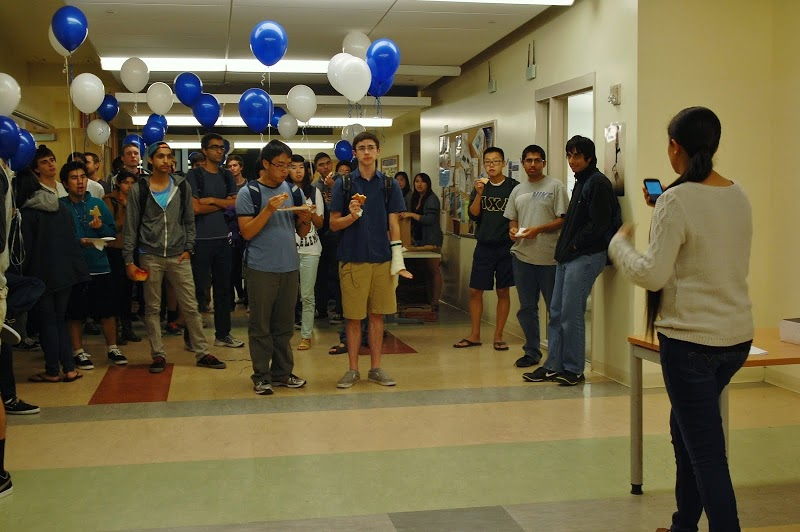

Women in Computing at UCSD: Women in Computing at UCSD (WIC@UCSD) is a non-profit Engineering organization committed to provide a supportive and resourceful environment for women in computing. We do this by holding general body meetings, technical talks, career building workshops, outreach events to local high schools, and computing opportunities for our members to join. I have been a member of WIC since my freshman year, and immediately have gained a great deal of support and sense of community from it. Therefore, my second year of undergrad, I decided that I wanted to have a bigger part in WIC, and sharing the support it had fostered for me. This is when I joined the board as the Programming Competition Chair. An opportunity that I truly cherish not only because it helped me build my technical skills, but also because it gave me leadership responsibility and the chance to help out my fellow student body. I currently act as the Vice President for the organization. Read more about my opinion on gender and computing.
Beginner's Programming Competitions: WIC@UCSD holds quarterly Beginner's Programming Competitions (BPC). These are programming competitions specifically designed for UCSD engineering students who have yet to take any upper division Computer Science and Engineering classes. Thereby giving students who are just starting out in Computer Science a fun, engaging, and technical opportunity to participate in outside of classes. Since its start in Fall of 2012, the competition has grown to about 130 students and takes up two entire labs in the CSE Computer labs on campus. Participants are given two and a half hours to solve twelve to fourteen challenging coding problems! The competition is a great way for students to come blow off some steam in a fun and competitive environment. The problems are selected to be engaging and challenging, and yet doable for beginners in Computer Science. We try to base many of our questions to be similar to those that student may be asked in technical interviews to better prepare them for internships and jobs. Here are some problem sets we have made: My role as the Programming Competition Chair from January 2013 to May 2014 has been to coordinate and organize the quarterly Beginner's Programming Competitions. This has included writing questions, writing solutions to the question sets, setting up the competition environment and deploying necessary content to participant accounts, contacting sponsors, and leading a committee of BPC Planners. It has been a unique experience to write programming questions; an experience that in its essence has helped me improve my thought-process as a programmer. This is because in order to come up with appropriate questions, I really needed to understand some of the underlying core Computer Science and algorithm techniques and concepts. Similarly, solving the questions in multiple different ways, as well as writing file stream and input/output code, has greatly improved my programming skills. Although the problems were not too difficult, considering they are meant for students who are in introductory classes, writing solutions provoked me to really think about the potential edge and corner cases in basic coding problems, and thereby helped me become a more thorough programmer. In addition, holding a leadership position taught me how to work well with others in a team environment. And more importantly how to delegate work among people and ensure that everyone has a fair amount of work.  Overall, the BPC has been a very important part of my undergraduate. Computer Science can be a difficult, yet rewarding, major. Although, unfortunately 60% of Technology and Engineering majors dropout or change majors. The BPC is our way to encourage students to stay with the major. Most dropouts out of Computer Science occur within the first few years of undergraduate studies. Therefore we believe it is important to give students an applicable resource outside of coursework where they can see the potential of Computer Science and experience it in a fun way.
BPC Sponsors: